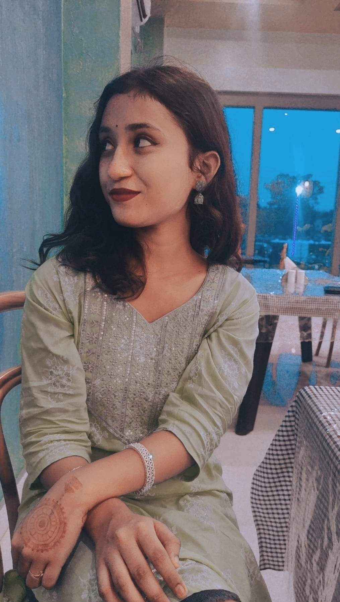
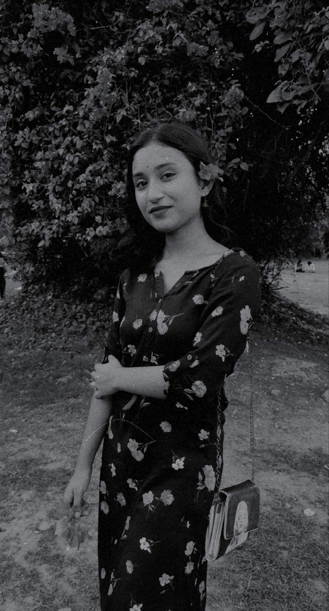
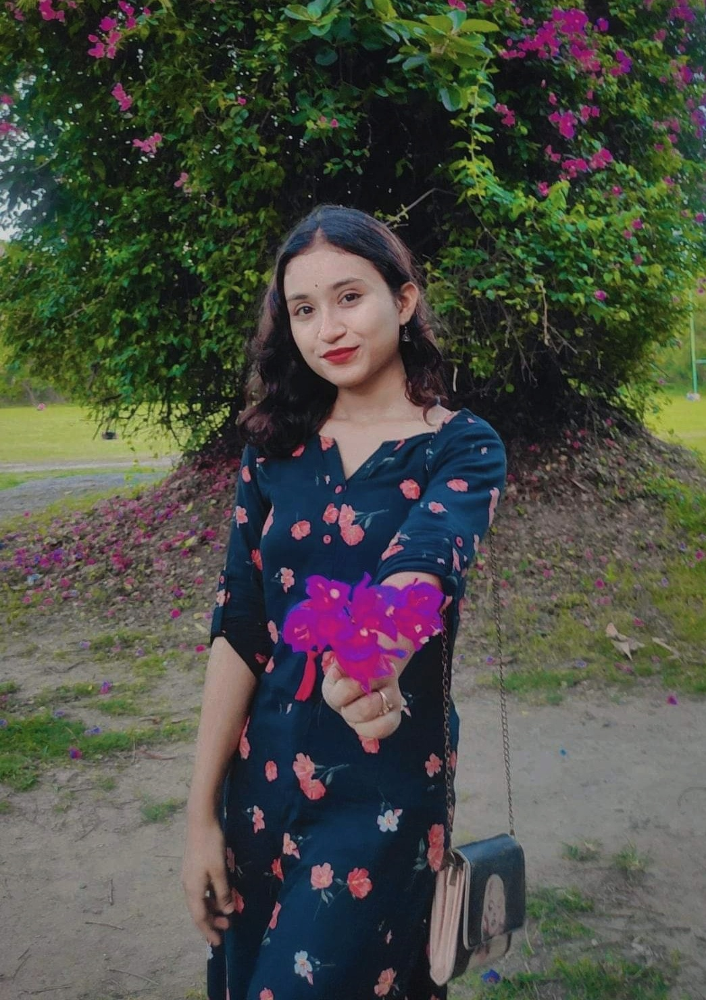

This is exactly what I write everytime I text you. I don't know why I just don't write "Hey" or "Hello". I guess it is because I really like your name. Because your name always reminds me of how sweet you are. Regardless, everytime I text you this, you always respond with a cute "Hlw" and then it makes me wanna talk to you more. But we don't even talk that much. Probably because both of our lives have been a little mundane lately. But still talking to you always makes my day better. You have such a vibe that anyone would be happy to be around you.
I actually have multiple pictures of you that are my favourite. But I had to choose just one. Because there wouldn't be any point of naming a section called "My favourite picture of you" and then have it redirect to your Instagram profile. Because all of your pictures are my favourite. On second thought that would actually be a very smart idea. Have you tried clicking the heading "My favourite picture of you"?
There's no denying it. Whenever I hear this song it reminds me of you.
 I believe I have already told you multiple times why you're Wife Material and why you're Smart. But here are the reasons I think Ananna is The Best Girl I have ever known.
I never would have imagined that I would vibe so much with a girl. And when I texted you for the first time I didn't think you would be so sweet. I'm really happy to be able to talk to someone like you. Sorry I won't be able to call you tonight because I have two internals tomorrow. But I surely will later. And well you would probably wonder why I went through all this trouble of creating a webpage just to wish you happy birthday. And the reason is that you're special to me Ananna, and I wanted this birthday wish to feel a little more special than just a text wishing you happy birthday with a bunch of emojis after it. I hope it did make you feel special. Enjoy the day Ananna. Have tonnes of fun.